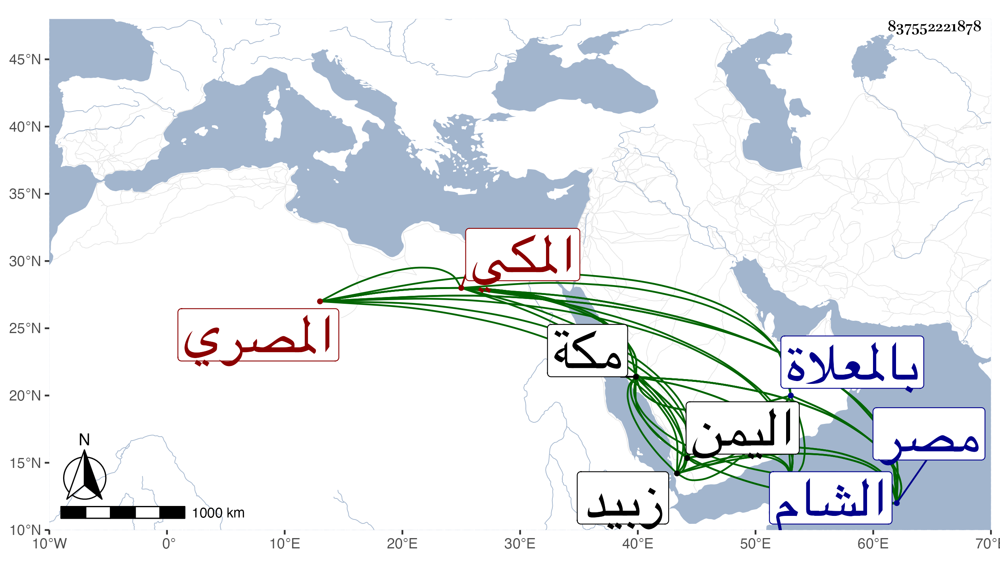

0902Sakhawi.DawLamic.ITO20230111-ara1.EIS1600.837552221878
Biography ID: 837552221878
3
علي بن محمد بن عمر بن عبد الله بن أبي بكر نور الدين المصري الأصل المكي جد علي بن محمد علي الماضي ويعرف بالفاكهاني . ولد بمكة ونشأ بها وسافر عقب بلوغه إلى مصر والشام للرزق فسمع بمصر من محمد بن عمر البلبيسي صحيح مسلم عن الموسوي ، ومال إلى الأدب وعني بمتعلقاته من العرض والنحو وغيرهما فتنبه فيه ونظم الكثير من القصائد وغيرها وفيه ما يستجاد ومن شيوخه فيه يحيى التلمساني المدني ، وله إقبال على الفقه وأخذه عن الجمال بن ظهيرة وصحب الصوفية بزبيد الشيخ إسماعيل الجبروتي وجماعته ، ودخل اليمن غير مرة وحصل له بر من الأشرف وولده الناصر وغيرهما . ذكره الفاسي في مكة وقال سمعت منه شيئا من نظمه بوادي الطائف وكان ذا دين وحياء ومروءة صحبناه فرأينا منه ما يحمد . مات في ليلة الخميس سادس عشري رمضان سنة ثمان عشرة بمكة ودفن بالمعلاة ولعله بلغ الخمسين رحمه الله .
